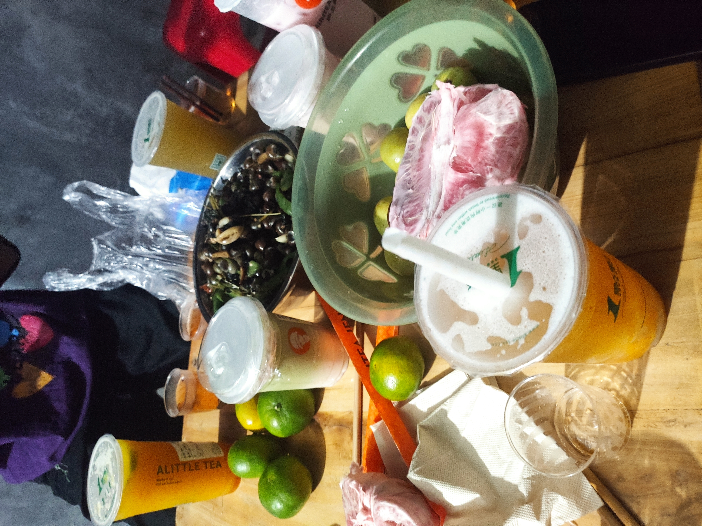

今天是 2026 年 9 月 25 日，农历八月十五，中秋节。 白天的时候天气还不错，到了傍晚，天边那轮月亮就已经隐隐约约地挂上来了， 又圆又亮，像是提前来赴约的老朋友。
说实话，我对中秋节的期待，一半在月亮，另一半——甚至更多——在饭桌上。 今年家里照旧是全员到齐，长辈们从下午三点就开始在厨房里忙活， 锅碗瓢盆的声音从厨房一路飘到客厅，闻着味儿我就知道，今晚这顿稳了。

开饭前的仪式感
晚上八点多，最后一道汤端上桌，圆桌终于被摆得满满当当。 按照家里的老规矩，长辈先动筷，然后大家才一起开吃。 我趁着大家还在寒暄，赶紧掏出手机拍了一张—— 就是上面这张，时间是 21:53，正好是菜最全、热气最足的时候。
中秋的意义，大概就是：月亮在天上圆，人在桌边圆，菜在盘子里也圆。
今晚的菜单
粗略数了一下，桌上大大小小一共十来道菜，我挑几个印象最深的记一下：
饮料也是备得足足的，桌上摆了好几瓶，大人喝大人的，我们喝我们的， 碰杯的时候“叮”的一声，比什么背景音乐都好听。
吃到扶墙出
我原本以为自己战斗力还行，结果吃到一半就有点顶不住了。 长辈们还在不停地往我碗里夹菜：“多吃点，这个你小时候最爱吃。” 于是我的碗就像被施了魔法，永远都是满的。
最后收尾的时候，我硬是又塞了半块月饼下去， 然后瘫在椅子上，看着满桌的残羹剩菜，心里只有一个念头： 给我吃美了😋
写在最后
吃完饭，一家人搬着小板凳到阳台上赏月。 月亮比傍晚时更高、更亮了，云也散了，就那么安安静静地挂在天上。 那一刻突然觉得，所谓“团圆”，其实不需要多隆重的仪式， 一家人能坐在同一张桌子前，热热闹闹地吃一顿饭，就已经很好了。
好了，这篇流水账就写到这里。 祝看到这里的你，中秋快乐，月圆人团圆🌕